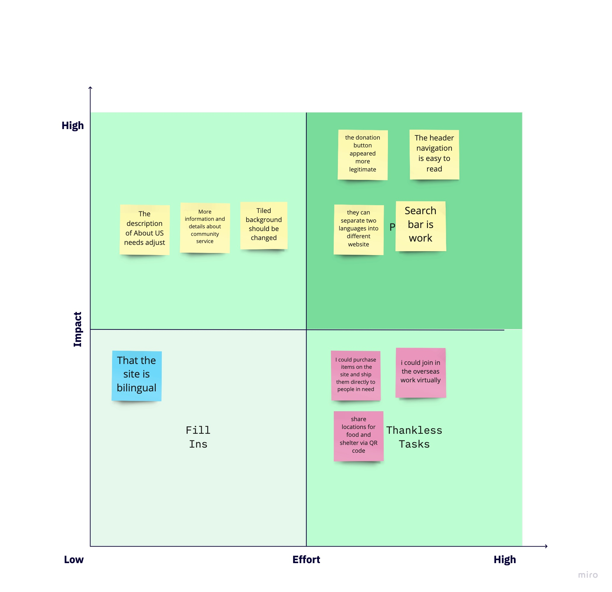
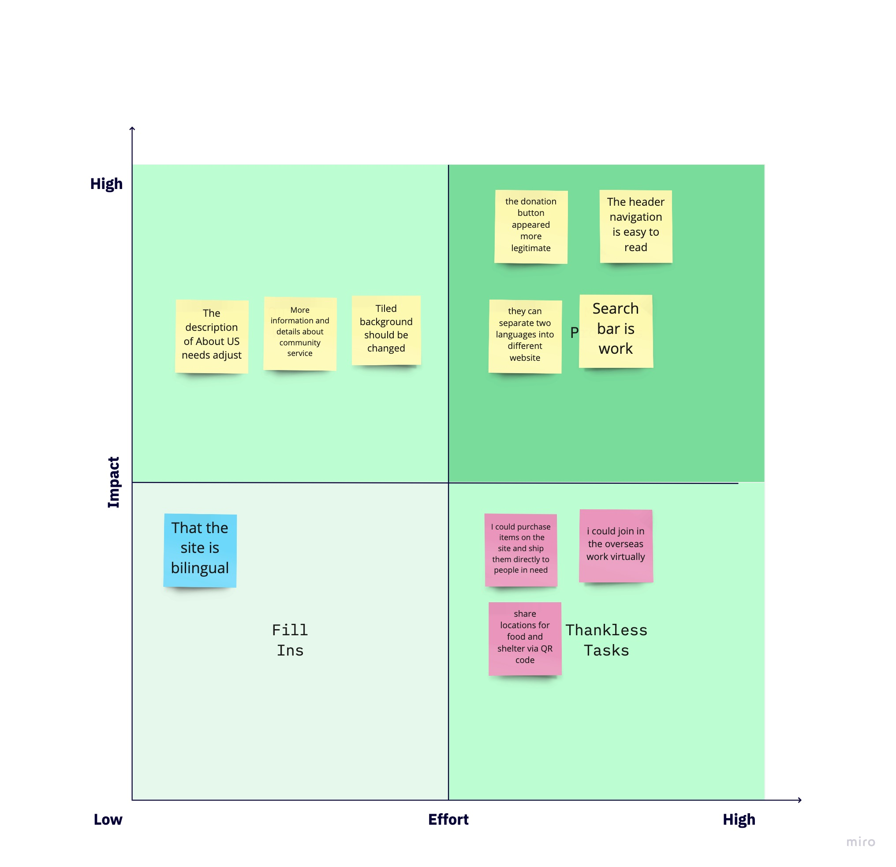

S.O.S for Humanitarian Actions Site Redesign
Project Overview
Our primary goal is to redesign the website to give it a trustworthy appearance and improve the ease of finding information. We plan to rebrand the site with visually appealing and comforting logos, colors, and images. Additionally, we will create new forms and donation links to encourage increased donations and volunteer opportunities.
Role:UX/UI Designer
Tool:
- Slack
- Miro
- Trello
- Figma
- Google Suites
Project Duration:
12/2021 - 01/2022
3 weeks
Introduction
Challenges Statement

The SOS for Humanitarian Actions is a non-profit organization based in Atlanta. The website was initially intended to serve as a platform for donors to contribute to the organization and provide information about the services available to those in need. However, the site needs to be updated and visually overwhelming, making it difficult for users to find information quickly. This has led to concerns about its legitimacy.
Goal
In this project, our primary objective is to enhance the user experience on the website. We aim to achieve this through several key goals:
Trustworthiness: We intend to redesign the site to give it a more trustworthy appearance. This involves making improvements to the overall design, layout, and content presentation.
Rebranding: We will rebrand the site by introducing more aesthetically pleasing and comforting logos, colors, and images. This will create a welcoming and appealing visual identity for the organization.
Enhanced Donations and Volunteer Opportunities: To support the organization's mission, we will implement new forms and donation links. The goal is to facilitate increased donations and provide easier access to volunteer opportunities for users.
By focusing on these goals, we aim to create a more user-friendly, engaging, and effective online presence for the organization.
User Research
Persona
At the project's outset, we assumed our user persona was a 45-year-old interior designer from a local area in GA. She has a passion for making the world better. She wants to start her action from the local area. One of the options is to donate through a legit non-profit website and sign up for community service if she has free time. Her main challenge is finding a trustworthy non-profit website to achieve her goals.
Research/Analysis

At the outset, we developed a Guerrilla Testing Plan for the original website, consisting of four user testing tasks: making a donation, finding the company's address, reading mission statements, and using the search bar. We prioritized the donation task as a crucial feature for a non-profit website and aimed to uncover user pain points. We conducted five user tests and organized the results into Affinity Diagrams to analyze user interactions and feedback.

We began identifying pain points during user testing. Users needed help trusting the website due to its unprofessional appearance, making them uncomfortable browsing. Additionally, the website’s presentation of two different languages confused many users. We employed techniques such as Empathy Maps, ‘I like, I wish, What if’ mapping, and a Feature Prioritization Matrix to delve deeper into user needs and pain points.
 

We aimed to retain the website's positive aspects while addressing its weaknesses. Users appreciated the presence of two languages, English and French, and a donation button on every page. Additionally, users found the pictures showcasing the organization's work convincing indicators of legitimacy. To tackle the website's shortcomings, we used a prioritization matrix to identify and prioritize areas needing improvement. This approach allowed us to address the most critical issues.
The matrix helped us to organize the bad parts and list in the details. We identified the difficulties of bad parts and priority of bad parts - what needs to be done first.
Redlining
.png)
We conducted a thorough review of each page of the original website, which revealed significant issues with navigation. Placing two languages in the same menu confused users. Additionally, the brand name was difficult to discern due to the background image, and the color contrast needed to be improved.
We also observed problems with readability, including inconsistent headings and font sizes. Paragraphs were often centered on every page, impacting overall readability.
Definition & Synthesis
How Might We Statement
How about we enhance the website to ensure easy information access for those in need and facilitate successful donor donations?
After we analysis every page, we wrote down all the problems. Here’s three directions we were going to:
- Redesign Website Style: The website needs a clear and trustworthy design to make a strong first impression on users.
- Redesign Navigation Flow: Improving user flow and navigation is essential, particularly in revamping the header and footer for easy access to donations and community services.
- Redesign Branding: Streamlining the branding to clearly represent the organization's local focus and identity while simplifying logos and information for better understanding.
Ideation
User Flow

We re-evaluated the user flow for the site to understand the existing features and context. The user flow revealed three paths based on user decisions: donating, signing up for volunteer work, and seeking help or public resources.
Card Sorting

Site Map

We conducted card sorting and created a sitemap for the menu system. This allowed us to reorganize categories and remove unnecessary items from the menu. While the original website had English and French on the menu, we decided to retain only English for simplicity.
Prototyping
UI Style Guide

Our design inspiration drew from the flag of Togo, one of the primary countries served by S.O.S for Humanitarian Actions. We aimed to connect with the people the organization serves and convey a sense of cleanliness, openness, and trustworthiness.
A mid-fidelity prototype
We started with a mid-fidelity prototype, streamlining the menu into five categories for clarity. A footer was added to enhance navigation. We selected a hero image from the original website and made the donation button red to prompt action—extensive alignment and rewording of statements improved user understanding. Overcoming the challenge of non-responsiveness, we developed both desktop and mobile versions.
UserTesting
After We did usability testing for a mid-fi prototype.The success rate is high, but we got a lot of feedback that needs to improve. We gave up on using pictures from the original website, and decided to pick the high quality images from Unsplash. We focus on the picture's size and alignment that we believe will help the website look better. Those decisions help our website reach the next level. The website looks more clear, and professional. As you can see on the right, here’s our redesign, desktop version and mobile version. Finally, we applied the UI style guide to our redesign wireframe.
Final
Clickable High-Fidelity Prototyping
After conducting usability testing on our mid-fidelity prototype, we achieved a high success rate but received valuable feedback for improvement. We opted to replace pictures from the original website with high-quality images from Unsplash, focusing on size and alignment for improved aesthetics. These decisions elevated the website's clarity and professionalism. Our redesign includes both desktop and mobile versions, and we applied the UI style guide to our wireframe.
Conclusion
Upon first encountering this website, our team recognized the urgent need for a redesign, sparking excitement and a wealth of possibilities. Through dedicated effort, we are confident that we have transformed this unprofessional and untrustworthy site into one that instills confidence in visitors, encouraging them to donate their time and money to S.O.S for Humanitarian Actions. Our next step is to collaborate directly with S.O.S. for Humanitarian Actions to expand the site to meet their growing needs. We hope our work inspires non-profits, regardless of size, to strive for excellence in their online presence.